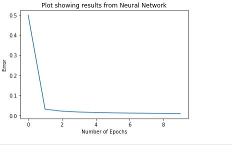

Machine Learning
Macukow states that (2016) ANNs are computational models inspired by the human brain's structure and function. They are designed to recognise patterns and solve complex problems by learning from data. ANNs consist of interconnected layers of nodes (neurons) that process input data to produce an output. Each connection between nodes has an associated weight, which is adjusted during training to improve the model's performance.
The concept of ANNs dates back to the 1940s, with the pioneering work of Warren McCulloch and Walter Pitts, who proposed a model of artificial neurons(Yaqub, 2018). In the 1950s, Frank Rosenblatt developed the perceptron, an early type of neural network capable of binary classification tasks (Rosenblatt, 1958). Despite initial success, the limitations of single layer perceptrons, particularly their inability to solve non-linearly separable problems highlighted by Marvin Minsky and Seymour Papert in 1969, led to a decline in ANN research (Newell, 1969). However, the field experienced a resurgence in the 1980s with the development of multi-layer perceptrons (MLPs) and the backpropagation algorithm, which allowed for more complex and powerful models. Today, ANNs are a cornerstone of deep learning and are widely used in various applications, from image recognition to natural language processing.
The weights corresponding to these inputs are also defined as NumPy arrays with values 0.7 and 0.1, and their correctness is validated with 0.7. A sum function to compute the weighted sum of the inputs is introduced, serving as the perceptron's raw output before applying any activation function. The use of the dot product is emphasized as an efficient method for calculating the weighted sum, especially vital for large datasets.
This serves as a foundation for constructing a perceptron by defining its inputs and weights and suggesting methods for processing these using NumPy’s robust array operations. However, the application of this on a more robust dataset could provide more insight into the functioning of a SLP.
After the network is trained, a plot is generated showing how the error of the network decreased over the epochs.
This visualisation helps to understand how the network learned over time. The actual outputs and the predicted outputs of the network are compared to see how well the network has learned. It is observed that the neural network was able to produce values close to the actual values, demonstrating its ability to handle the complexity of the XOR operator dataset. The updated weights after the training process are displayed, which can be used for future predictions.
A function `calculate_output` is defined that takes an instance of the dataset and returns the output of the network for that instance. Finally, the network is tested by passing in inputs and checking the outputs. The network correctly predicts the outputs for the XOR logic gate, demonstrating that it has successfully learned the XOR operation.
Artificial Neural Networks (ANNs) are powerful tools that mimic the brain's neural networks to solve complex problems. From their origins in the 1940s to the advanced multi-layer perceptrons used today, ANNs have significantly evolved, overcoming early limitations to become integral to modern AI and machine learning. Understanding the structure and function of single-layer and multi-layer perceptron was very fundamental to grasping the broader capabilities and applications of ANNs in various fields as seen in the next units covered.
Macukow, B. (2016) 'Neural Networks – State of Art, Brief History, Basic Models and Architecture', In: Macukow, B Computer Information Systems and Industrial Management. Springer International Publishing. 3–14.
Newell, A. (1969) A Step toward the Understanding of Information Processes: Perceptrons. An Introduction to Computational Geometry. Marvin Minsky and Seymour Papert. M.I.T. Press, Cambridge, Mass., 1969. vi + 258 pp., illus. Cloth, 12; paper, 4.95. Science 165, 780–782.
Rosenblatt, F. (1958) The perceptron: a probabilistic model for information storage and organization in the brain. Psychol. Rev. 65, 386–408.
Yaqub, F. (2018) A Study on Artificial Neural Network. International Journal of Innovative Research in Science, Engineering and Technology 7(1). DOI: http://dx.doi.org/10.15680/IJIRSET.2018.0701093